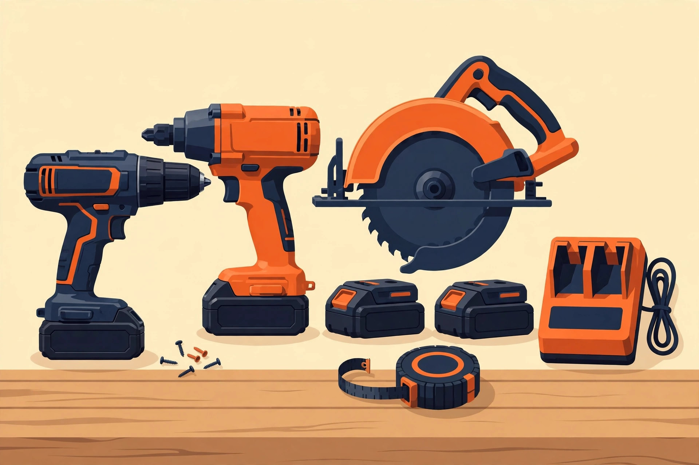
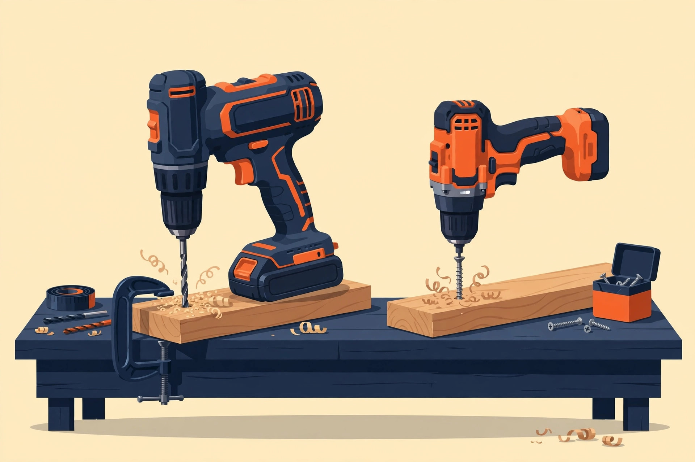
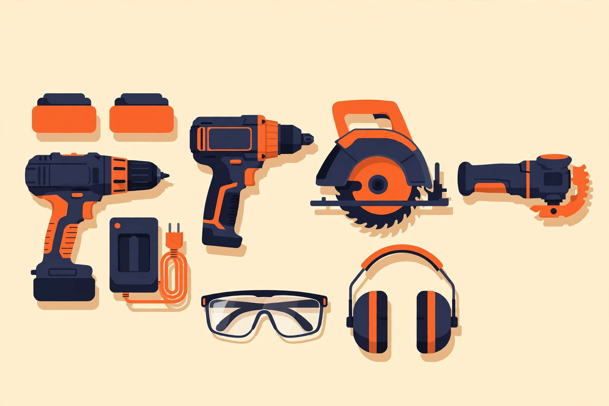
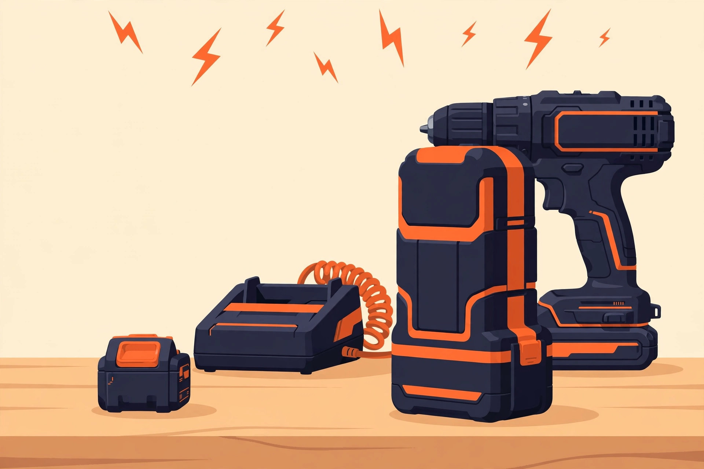
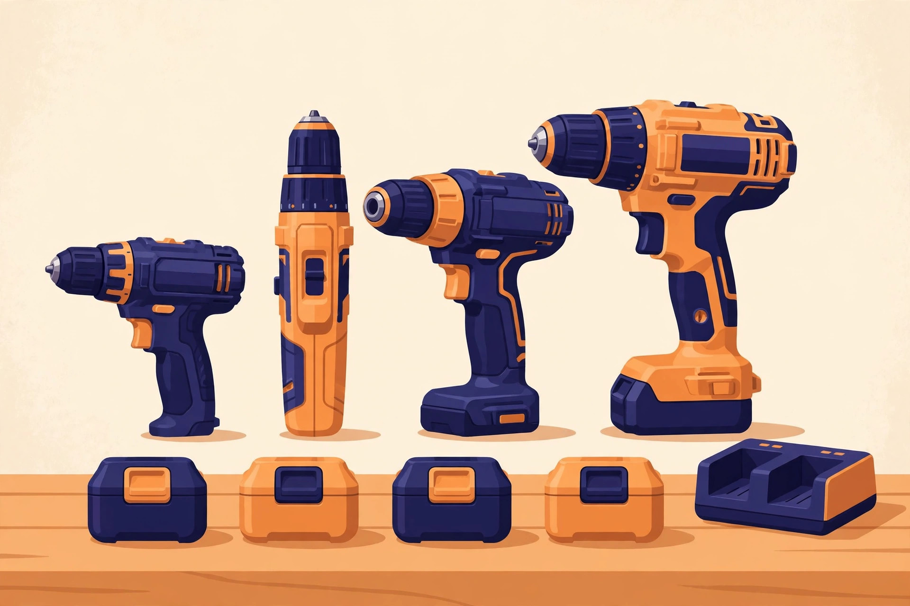

Buying your first cordless drill is really a vote for a battery platform. We compare DeWalt, Milwaukee, Makita and Ryobi in plain English — so you buy once, and buy right.
Start Here: Drill vs Impact Driver Compare the 4 Platforms
If you are new to cordless tools, follow these three steps. Each one builds on the last — and each one saves you from an expensive mistake.
Learn the difference between the two tools every beginner confuses — and which one to buy first.
The buying order that saves you money: the 4 tools to buy first, what to buy as bare tools, and what to skip for now.
What the voltage numbers really mean — and why 18V and 20V MAX are the same battery.
Every cordless tool you buy later will use the same batteries. Choose the platform first, the tool second.
| Platform | Best for | Ecosystem | Entry strategy |
|---|---|---|---|
| DeWalt 20V MAX | Most homeowners — broad retail availability, balanced value | Large, multi-battery-type family | Buy a kit first, bare tools after |
| Milwaukee M18 FUEL | Serious DIYers building a workshop | Premium, deep pro lineup | Buy a kit first, bare tools after |
| Makita LXT 18V | Compact feel, contractor-grade handling | One of the largest 18V lineups | Buy a kit first, bare tools after |
| Ryobi ONE+ 18V | First-time buyers, budget builds | 300+ tools on one battery | The kit is the value entry point |
Watch out: a bare tool ("tool only") saves roughly a third versus the kit version — but only if you already own that brand's batteries. Starting from zero? Buy the kit.
Read the full platform comparison → — entry prices, battery costs and warranties for all four platforms, checked October 2026.

GuideThe question every beginner asks — answered with real use cases, not just spec sheets.

GuideBuy tools in the wrong order and you waste money. Here is the right order — and the one-platform rule behind it.

GuideThe voltage decision explained: who should buy 12V, who should start on 18V/20V, and why the label war is marketing.

ComparisonThe platform decision, compared honestly: ecosystem size, real entry prices, battery costs and warranties — checked October 2026.
Most review sites copy spec sheets. We explain what the specs mean for real weekend projects — torque, battery amp-hours, brushless vs brushed — and we tell you when a cheaper tool is genuinely enough. Read our testing methodology. ThuKhai is not currently part of any affiliate program, so there are no affiliate links on this site. See our affiliate disclosure.